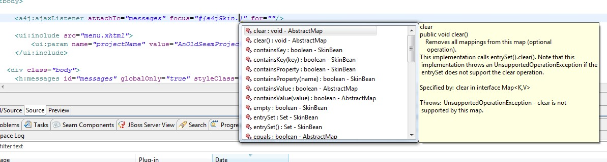

Web Projects View
Menu key now shows the same context menu in 'Web Projects' view as right mouse click does.
RichFaces Support
Richfaces 3.3 Capability was updated to Richfaces 3.3.2.SR1 release
Code Assists
Content assists support added for JSF 2 Composite UI Components

Content assist in template clients now includes proposals loaded from resource bundles declared in template.
CSS Style Editing
'CSS Properties' view can be used in for jsp files to edit styles inside style node.

Refactoring / References Search
- Find references and rename now supported through context menu or Ctr+Shift+G for:
- Manage Bean's property/method
- JavaBean property/method
- Message Bundle property
Editors
Properties editor now supports case sensitive/insensitive filtering

Open-on now supports EL substitution to make it working even for strings with El inside
Content assists for expression language shows hoovers with Java documentation
